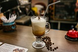
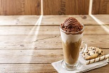
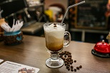
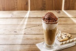

Кофе Глясе
250 мл
Стоимость:
150
руб.
Глясе – это охлаждённый кофе с мороженым. Название напитка происходит от французского слова glacé (ударение на второй слог), что в переводе означает «замороженный», ледяной. От всех других видов кофе глясе отличается тем, что в нём обязательно должно быть мороженое. Ближайший родственник напитка – итальянский десерт аффогато, однако он готовится несколько иначе.
Считается, что рецепт глясе родился в Австрии: в конце XIX или начале XX века. Случилось так, что в одной из столичных кофеен закончились сливки, и посетителю подали кофе по-венски с мороженым. Напиток настолько понравился гостю, что с тех пор он заказывал только такой кофе. Как бы то ни было, но в XX веке, когда технологии позволили удешевить изготовление мороженого, глясе стал очень популярен во всём мире.
 



С написанием этого слова по-русски возникли некоторые сложности. Лингвисты долго спорили, как правильно называть напиток: глясе или гляссе. Некоторое время орфографические словари допускали оба написания, но в последних изданиях верным признан вариант «глясе».
Готовят глясе двумя разными способами:
1. Мороженое кладут на дно, потом добавляют кофе. Мороженое всплывет на поверхность, и кофе окрашивается в бежевый цвет;
2. Сначала наливают кофе, а сверху выкладывают шарик вкусного мороженого. Выглядит это очень эффектно.
Мороженое добавляют сразу перед подачей, не раньше, иначе оно растает.
Глясе подают только в прозрачном сосуде: высоком бокале, кружке для кофе по-ирландски. Вместе с кофе гостям предлагают соломинку и ложечку с длинным черенком. Можно пить глясе, помешивая его трубочкой, или же сначала съесть мороженое ложкой, а потом выпить жидкость.
Кофе глясе хорошо сочетается с ягодами (клубникой, малиной), песочным печеньем, бисквитами.
Обратно в меню
Стоимость:
150
руб.
1. Мороженое кладут на дно, потом добавляют кофе. Мороженое всплывет на поверхность, и кофе окрашивается в бежевый цвет;
2. Сначала наливают кофе, а сверху выкладывают шарик вкусного мороженого. Выглядит это очень эффектно.
Мороженое добавляют сразу перед подачей, не раньше, иначе оно растает.